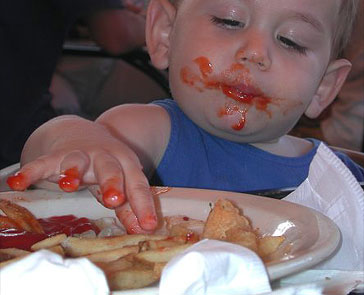
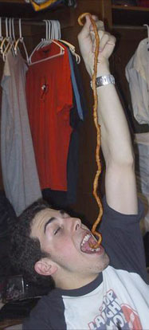
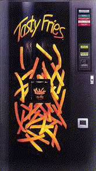
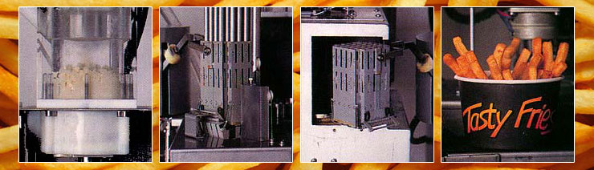
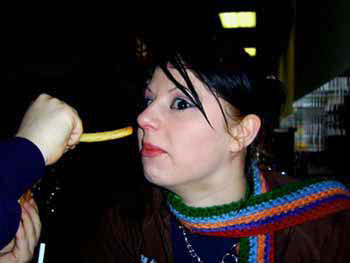
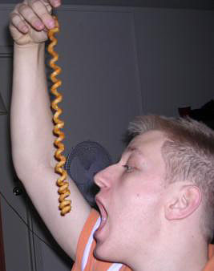
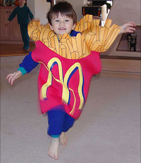
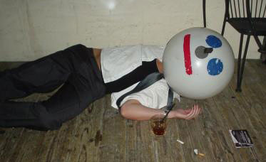
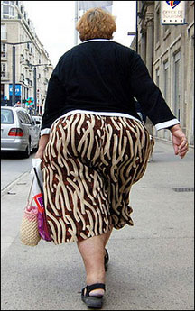
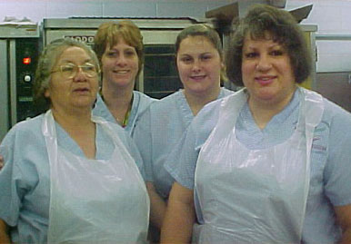

|
French FriesNobody bothers to ask if you'd like fries with that anymore, because these days it's assumed you do. In the mid 1990s, the world's most ubiquitous upsell line was quietly phased out in favor of an even better way to celebrate your preferences. Today's climate cordially invites you to participate in supersizing, an American ritual which extends one's purchase order to include either more fries, or way, way more fries. There is no such thing as a "small order" of fries anymore -- fast food chains insist all order hierarchies begin at medium. Nobody wants to be accused of dishing out portions so tiny they can't be seen with the naked eye, and small bags of fries are typically dwarfed by adjacent 64-ounce tower tanks of drinkable soda syrup. It can only be assumed, therefore, that "too many fries" is an equally ludicrous conceit. Marcia Poole of the Sioux City Journal is happy to report that French fries get their name not from the country, but the method of peppering and preparing the potatoes. They are actually from Belgium -- and for this reason, the "f" in "french" need not be capitalized. When one frenches a potato, one cuts it into long, narrow strips before cooking it in a tub of salted oils. You can also "french" meat, by trimming away the fat and bone, leaving behind only lean, lanky shanks. If someone frenches your meat, potatoes, or lean lanky shanks -- get a license plate number and tell a grown-up. The term "french fries" didn't really enter the American meme until 1930, after french-fried onions became the talk of the town. You heard it here first: onion rings and french fries are two equal and opposite forces, battling it out on the world stage for all eternity. Only in America, baby! Make way for a new generation! Here's you eating a french fry: HOMPTH SLOBBER DUH. Move it along, old man! Now there's a new kid in town! Time for some new-fangled, star-spangled onion rings! DOW NOW NOW / GUITAR ROCKIN' / SNOWBOARDIN' / iPODDIN'. In the old-timey antiquified black-and-white days gone by, onions were were dipped in flour and boiled to a crisp. Other times, they were battered and served with a beer. Still other times, they were boiled, beer-battered, and served with a flower -- but only for garnish, not for eating. Whatever the presentation, to this day french-fried onion rings suffer a name which makes little sense: onions cut into circular, concentric rings can sometimes be referred to as chips in faraway sci-fi Utopian England or southern Wales -- but they fail to comply one hundred percent with the traditional interpretation of french strippers. STRIPS! French fried potato strips. During the U.S.-led invasion of Iraq in 2003, France dared to exhibit a level of dissent with United States military action. Republicans counterbalanced this disagreement by launching the ostensibly humorous and patriotic Freedom Fries campaign. Representatives Robert Ney (R - Ohio) and Walter B. Jones (R - North Carolina) ordered White House cafeterias to change the name of french fries to freedom fries -- an action passed by Congress after a vote. Nathalie Loisau, a spokeswoman from the French embassy acknowledged that "we are at a very serious moment dealing with very serious issues, and we are not focusing on the name you give to potatoes." French fries remain a point of contention among food historians, but mostly it's agreed that President Thomas Jefferson (R - Virginia) was the first president to serve french fries in the White House. Maybe even the Oval Office! At that point, they were called "pommes frites" -- literally, fried pom-poms -- and they were considered staples of American cuisine. Historian John Mariani sleuthed that the term "french fries" finally made its way into a French food journal sometime around 1858. Mariani later died due to complications of the boring. Should you be able to purchase french fries anywhere, at any time, directly on demand? Ladies and gentlemen, that is your God-given right as Americans according to a Nevada corporation called Tasty Fries, Inc. Over the course of the past ten years, Tasty Fries has spent over $40 million in research and development, searching for ways to establish and market an army of vending machines capable of dispensing hot, tasty french fries to consumers -- in less than ninety seconds. Inside each vending machine is a streamlined process both elegant and genius: a Willy Wonka wonderland of pure imagination. First, a clump of Nestle-brand Potato Product gets re-hydrated with purified water under an ultraviolet lamp. From there, the mushy semi-solid potato compost can be squeezed through a wire grid, rendering exactly 32 individual fry-like parallelepipeds (extruded rectangles).  Then they're lowered basket-wise, into a miniature cooking chamber containing clean, preheated, cholesterol-free oil. After cooking, they're dispensed into a cup, with ketchup and salt available upon request. Every half hour, the machine performs a self-sanitizing operation with water reaching temperatures of 190 degrees, and the used oil is sold to a recycling company. Talk about savory and delicious! The Tasty Fries machines attempted to establish and secure territory wherever fries made the most sense: high schools, airports, bus and train stations. They went public, issuing millions of dollars' worth of stock. In 1994, the Tasty Fries board of directors invited Edward Kelly, the owner of a machine design subcontracting company to witness the Tasty Fries magic. The machine produced what Kelly could only describe as "the most disgusting potato product" he'd ever seen. He refused to eat anything that plopped like a prom-toilet abortion from a Tasty Fries dispensary, and in a written evaluation he suggested the company promptly abandon their idea. The board of directors responded by making Mr. Kelly the CEO of Tasty Fries, Inc. -- in the hopes he could architect a better machine. Shortly thereafter, the company entered a period of sharp decline, brought about by partner-related investment scandals and the failure to turn a profit or place even a single vending machine into the marketplace. Judge Vice Chancellor Stephen Lamb expressed strong criticism of the company, citing numerous Tasty Fries press releases as "overly optimistic, if not outright misleading". He went on to describe the Tasty Fries as a sham venture "little more than a vehicle to raise money from gullible investors". During the very first business quarter of 2006, a cascading blitzkrieg of simultaneous snack food scandals threatened to deep-fry the McDonald's restaurant corporation. In January, a "labeling rule" enacted by the Food and Drug Administration required the entire packaged food industry to report all common allergen ingredients in an easily-accessible public forum. Translation: if people might be deathly allergic to something in your product, now's your chance to let 'em know. This ruling forced McDonald's to make February disclosures on its website that their french fry recipe contained -- among other things like partially hydrogenated soybean oil and dextrose corn sugar -- something called gluten, a protein found in wheat, rye, and barley. Gluten is used by McDonald's on a massive scale, primarily as a flavoring agent but also as a key ingredient in its french fry cooking oil. Stockholders panicked. It was Enron all over again, if Enron was a big tall glutinous french fry, stomping across America like King Kong, squirting ketchup on people and tossing them around like rag dolls. The language of the french fry disclosure on McDonald's' website was structured innocently enough: "contains wheat and milk ingredients" -- but that was all it took for citizens like Debra Moffatt of Cook County, Illinois to hire the Chicago law firm of Dale and Pakenas. Together, they filed a suit charging the restaurant giant of consumer fraud, seeking class-action status and unspecified damages. Moffatt and her two children suffer from celiac disease, which interferes with the absorption of nutrients and is only triggered by ingesting gluten. Mark and Theresa Chimiak of Jupiter, Florida filed a lawsuit as well, claiming their gluten-intolerant 5-year-old daughter Annalise became seriously ill after eating McDonald's fries. Then another Florida family joined in: David and Cherilyn Levy of Fort Lauderdale. They allowed their five-year-old daughter Sydni to eat McDonald's french fries twice a week, primarily because the corporation had already gone on record to promote their fries as gluten-free. Sydni's celiac reactions began to exacerbate the symptons of her autism, and the Levy lawsuit seeks more than $5 million. Within days, dozens more vegans, vegetarians, individuals with low self-esteem and those just looking to hop aboard the handout bandwagon were also suing McDonald's. Celiac disease affects 1 in 133 Americans. Symptoms certainly include classic, best-of favorites like diarrhea, weight loss and malnutrition -- but also isolated nutrient deficiencies which accumulate over time, making the sufferer less immune to toxins. And it's by no means just for poor white trash anymore: recent celiac studies show the disease's increasing tolerance for Hispanics, Blacks and Asians. Sufferers often waste years of their lives getting misdiagnosed for their mysterious stomach cramps and spluttery toilet splurts. A common assumption is that you've got cancer, or Leukemia, or nonexistent ulcers consistent with Irritable Bowel Syndrome. Victims can be subjected to many unnecessary or expensive procedures -- including blood tests, biopsies, ultrasound and CAT scans, thyroid exams, and probing treatments for urinary tract infections or lurking parasites. Ultimately, the only acceptable treatment for celiac disease is a strict, 100% adherence to a gluten-free diet for life. This means eliminating wheat, rye, oats, barley, dairy products, soy, and eggs. In the midst of this crisis, in February of 2006, 42-year-old Lora Davis of Gaston County, North Carolina, claimed to have found smeared blood inside her box of french fries. Davis says she bought a Happy Meal at the drive-through window of a Gastonia McDonald's in November 2004, and then went back to her office for lunch. When she found the blood, she called the restaurant and spoke with an apologetic assistant regional manager -- who confirmed that the blood came from an employee with a cut. "At first, I felt disbelief," Davis said. "Then fear. I get sick when I think about it." She went straight to her doctor for an AIDS test and a check for other infectious diseases -- under the impression that McDonald's would pay for her medical bills. When she didn't hear back from the company for several months, she filed a $10,000 lawsuit and stopped eating out for several months. Gaston County health inspector John Carpenter said he spoke to the McDonald's manager, who confirmed Davis' account of the incident. Carpenter gave him a lecture about handling future situations in which a preparer of food has cuts on his fingers or hands. An attorney for Davis says all attempts to reach an out-of-court settlement have been fruitless -- and McDonald's isn't commenting because the claim is pending. Meanwhile across town, an emergency blood transfusion failed after an errant french fry was found lodged in the patient's heart. Hey -- do these french fry pants make me look fat? You bet they do. The blood and gluten scandals arose only a few months after McDonald's had already come forward to acknowledge that their french fries contained a third more fat than previously admitted, prompting equal and opposite lawsuits from citizenry around the nation, sometimes in excess of $10 million. Will this prosecution never end? In school breakfast and lunch programs, french fries are demonstrably more popular than hamburgers and slices of pizza combined. Morning and afternoon menus across America need only leverage the power of the potato to boost cafeteria sales and help our plumpity-plump pre-teens grow even plumpitier. In your face, fruit cup! These days, junior high school students enjoy an endless parade of all-you-can-eat buffet rivaling those found in Las Vegas casinos. Sausage links with gravy, french toast sticks, tacos, breakfast burritos, graham cracker marshmallow s'mores, double-fudge brownies, scrambled eggs, pork patties, tater tots, jelly donuts, sticky cinnamon rolls, strawberry cheesecake, barbecued ribs, buttermilk biscuits, beef and cheese quesadillas, potato rounds, double-battered corn dogs, parmesan-baked macaroni and cheese -- and two phat-ass scoops of Rocky Road devil's food gumball ice cream with vanilla-cinnamon whipped cream pie for dessert! So for the love of god, people: save room for the french fries. Pace yourself, it's not a marathon. And make some noise for all the dedicated cafeteria ladies out there. They work hard and they play hard.
|